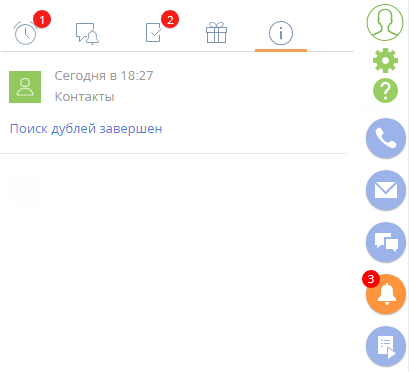
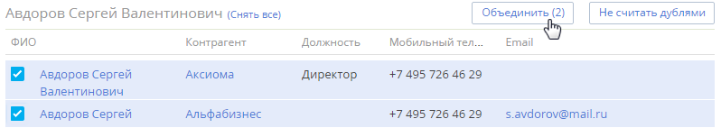
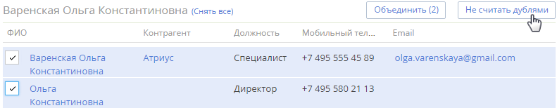
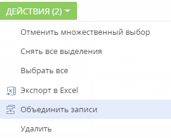
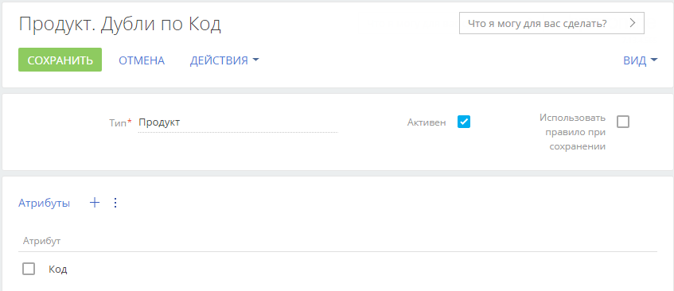
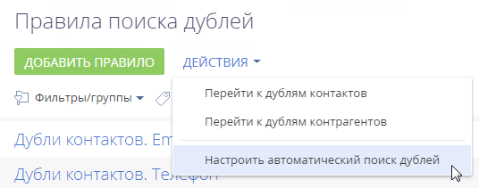
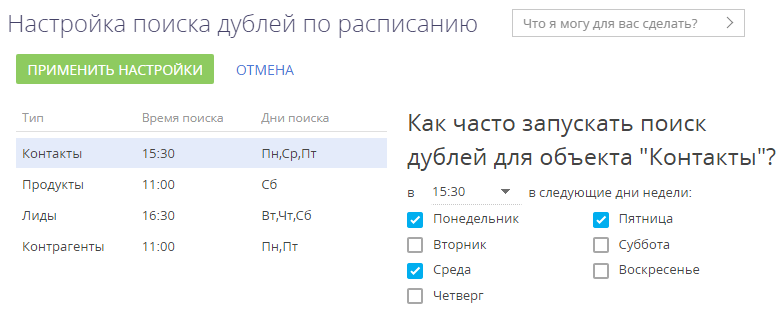

При добавлении данных в разделы системы существует вероятность появления в системе дублирующихся записей (дублей). Для поддержания целостности и актуальности данных в системе используется функциональность поиска и объединения дублей.
-
Массовый поиск дублей выполняется по всей базе. Запускается вручную либо автоматически согласно созданному расписанию.
-
Локальный поиск дублей предусматривает проверку существования дублей для конкретной записи. Запускается при создании новой записи в момент ее сохранения в разделе.
Вы также можете, не запуская поиск, в ручном режиме выбрать записи, которые являются дублями, и выполнить их слияние. Такая опция доступна для всех разделов.
По умолчанию поиск дублей доступен в разделах Контрагенты, Контакты и Лиды. Для этого система использует ряд преднастроенных правил, например, дубль может определяться по номеру мобильного телефона или по email-адресу. При этом система предоставляет гибкие возможности для кастомизации:
-
Вы можете настроить под свои потребности список правил поиска дублей контактов, контрагентов и лидов.
-
Вы также можете создать свои правила поиска для любого раздела системы, в том числе пользовательского.
Ручной поиск дублирующихся записей можно выполнить при помощи действий разделов, для которых создано хотя бы одно правило поиска дублей. Например, в разделе Контакты доступно действие Перейти к дублям контактов. По завершении поиска система отобразит список потенциальных дублей.
Найти и обработать дубли
Для перехода к дублям пользователи должны иметь права на чтение и изменение записей разделов, в которых они смогут выполнять поиск дублей, а также на системную операцию “Поиск дублей” (код “CanSearchDuplicates”). Подробно о настройке прав доступа читайте в статье “Настроить права доступа на системные операции”.
Массовый поиск дублей
Результаты поиска дублей обрабатываются на странице найденных дублей (Рис. 1). При необходимости вы можете настроить колонки, которые выводятся в реестр дублей, по кнопке Вид —> Настройка списка в правой верхней части экрана.
Открыть данную страницу можно несколькими способами:
-
Перейдите в раздел, в меню Действия выберите команду Перейти к дублям раздела (Рис. 2).
-
Откройте дизайнер системы по кнопке
 ) и перейдите по ссылке Правила поиска дублей. На открывшейся странице в меню Действия выберите команду Перейти к дублям контактов или Перейти к дублям контрагентов (Рис. 3). Опция доступна только для разделов Контакты и Контрагенты.
) и перейдите по ссылке Правила поиска дублей. На открывшейся странице в меню Действия выберите команду Перейти к дублям контактов или Перейти к дублям контрагентов (Рис. 3). Опция доступна только для разделов Контакты и Контрагенты.
- Откройте раздел, в котором необходимо найти дублирующиеся записи. Например, раздел Контакты.
- В меню Действия выберите команду Перейти к дублям раздела “Контакты” (Рис. 2).
- В результате отобразится страница найденных дублей. Если массовый поиск дублей уже выполнялся ранее, например, автоматически, то на странице отобразятся его результаты. При необходимости вы можете их обработать, прежде чем запустить новый поиск дублей.
- В меню Действия открывшейся страницы выберите команду Запустить поиск дублей.
- В результате поиск дублей будет запущен в фоновом режиме. В это время можно продолжить работу в системе.
- После того как поиск дублирующихся записей завершится, в центре уведомлений на вкладке вы получите уведомление (Рис. 4).

-
Перейдите по ссылке в уведомлении, чтобы открыть страницу с результатами поиска дублей. Вы также можете перейти на эту страницу другими способами (Рис. 2, Рис. 3).
В открывшемся списке отобразятся сгруппированные по схожести дублирующиеся записи (Рис. 5), которые были найдены по активным правилам поиска дублей.
Каждую группу записей вы можете объединить в одну запись либо указать, что записи в группе не являются дублями. В этом случае они будут добавлены в список исключений для последующих проверок.
Рис. 5 — Выбор дублей для объединения -
Чтобы объединить дубли, отметьте те записи, которые вы считаете дублями, и нажмите кнопку Объединить.
В результате все отмеченные записи в группе будут объединены в одну, которая будет содержать все уникальные данные объединенных записей. Если одно и то же поле в объединяемых записях содержит разные данные, то система предложит вам выбрать, какие данные следует сохранить. -
Чтобы добавить записи, которые не являются дубликатами, в список исключений, нажмите кнопку Не считать дублями для группы, в которой остались только уникальные записи (Рис. 6).
В результате система не будет рассматривать записи группы как потенциальные дубли при последующих проверках на дубли.Рис. 6 — Пример записей, которые не являются дублями
Локальный поиск дублей
Локальный поиск дублей выполняется при сохранении новой записи в системе. Если после сохранения записи (через мини-карточку или страницу редактирования) открывается страница поиска дублей, то создаваемая вами запись, вероятнее всего, уже существует в системе.
Вы можете вернуться к редактированию записи или сохранить создаваемую запись. Если выполнить сохранение, то в дальнейшем при поиске дублей в разделе эта запись будет отображена в результатах поиска.
Объединить дубли
Объединить записи
Вы можете объединять несколько записей как после массового поиска дублей, так и произвольно без запуска общего поиска. Объединение доступно как для записей в реестре любого раздела, так и для значений в справочниках.
Для этого:
-
В реестре раздела или в справочнике, в котором нужно объединить записи, перейдите в режим множественного выбора по действию Выбрать несколько записей.
-
Отметьте записи, которые необходимо объединить.
-
В меню кнопки Действия выберите Объединить записи (Рис. 7).
Рис. 7 — Выбор команды объединения записей на примере значений справочника
Далее система автоматически объединит записи. Если в записях указаны разные значения в одних и тех же полях, то откроется окно объединения дублей. Выберите значения, которые сохранятся для результирующей записи, и нажмите кнопку Объединить.
Выполнив объединение записей, система отправит уведомление. Чтобы увидеть изменения в реестре, обновите страницу веб-браузера. После объединения в системе останется только одна запись с объединенными и выбранными значениями полей.
При нажатии кнопки Объединить на странице поиска дублей уникальные данные из всех объединенных записей сохраняются в результирующей записи. При этом:
-
В качестве результирующей записи будет использована запись с самой ранней датой создания.
-
В результирующей записи сохраняются значения всех заполненных полей и записи на деталях дублирующихся записей. То есть на деталях результирующей записи будут присутствовать все активности, звонки и т. д., которые были связаны с объединенными записями.
-
Одинаковые номера телефонов не дублируются, даже если в разных записях для них указаны разные типы (например, один и тот же номер указан как рабочий телефон у одной записи и как мобильный — у другой).
-
Одинаковые средства связи, адреса и знаменательные события сохраняются без дублирования.
-
При различных значениях полей (например, ФИО, номеров телефонов и т. д.) есть возможность выбрать, какое из значений нужно сохранить в результирующей записи. Также есть возможность выбрать, какое из текстовых примечаний оставить при слиянии.
-
Все внешние ссылки на объединяемые дубли заменяются ссылками на результирующую запись.
-
В результирующей записи сохраняются сообщения ленты всех записей, данные которых объединялись.
-
Если любая из объединенных записей была указана в записях других разделов, например, в полях Основной контакт или на детали Контакты контрагента раздела Контрагенты, то после объединения вместо них везде будет указана результирующая запись.
Пример сохранения данных при объединении дублей
Если значения в одном и том же поле у объединенных записей заполнены и отличаются, то при объединении дублей необходимо будет указать, какие данные должны быть сохранены в результирующей записи.
Например, в системе существуют дубли контактов с такими данными:
|
Поле |
Дубль 1 |
Дубль 2 |
Дубль 3 |
Результирующая запись |
|---|---|---|---|---|
|
ФИО |
Сергей Авдоров |
Авдоров Сергей |
С. Авдоров |
По выбору пользователя |
|
Тип |
— |
Клиент |
Контактное лицо |
По выбору пользователя |
|
Контрагент |
— |
Альфабизнес |
— |
Альфабизнес |
|
Мобильный телефон |
— |
+7(495)2132181 |
+7(495)213-21-81 |
По выбору пользователя |
|
Рабочий телефон |
+7(495) 523-6199 |
— |
+7(495) 523-6169 |
По выбору пользователя |
|
|
s_avdorov1981@gmail.com |
s.avdorov1981@gmail.com |
— |
По выбору пользователя |
|
Skype |
avdorov |
— |
— |
avdorov |
При объединении таких записей откроется окно объединения дублей (Рис. 8).
Установите переключатель напротив значений, которыми должны быть заполнены поля результирующей записи, и нажмите кнопку Объединить.
В результате в системе останется одна запись, к которой будут автоматически привязаны все связанные с объединенными записями объекты. Например, если переключатели установлены, как показано на Рис. 8, то результирующая запись будет содержать следующие данные:
-
ФИО: “Авдоров Сергей”;
-
Тип: “Клиент”;
-
Рабочий телефон: “+7(495)213-6199”
-
Мобильный телефон: “+7(495)213-21-81”;
-
Email: “s_avdorov1981@gmail.com”.
Алгоритм поиска дублей
Для поиска дублей используется та же технология, что и для глобального поиска.
В системе происходит индексирование данных: все специальные символы удаляются, оставшиеся буквы и цифры разбиваются по два или три символа и записываются в индекс, по которому в дальнейшем происходит поиск.
Записи разделов в ходе индексирования не изменяются.
Алгоритм локального поиска дублей в системе при сохранении записи:
- Пользователь создает и сохраняет новую запись.
- Система обрабатывает новые данные (убирает специальные символы, разбивает данные по 2–3 символа) и делает запрос в Elasticsearch на поиск записей, содержащих введенные пользователем символы.
- Система отображает все совпадения, согласно хотя бы одному активному правилу поиска дублей, для которого дополнительно установлен признак Использовать правило при сохранении. Совпадения с перестановкой слов также будут найдены.
Массовый поиск дублей после запуска (вручную или автоматически) выполняется аналогично, с учетом активных правил поиска дублей.
При поиске дублей по полям, в которых указан номер телефона, сравниваются все типы телефонов: Рабочий телефон, Мобильный телефон, Домашний телефон и т. д.
-
Если поиск выполняется по полю, которое содержит значения, состоящие из нескольких слов, то Creatio определит как дубли не только полностью совпадающие значения, но и те, которые совпадают частично, по одному или двум словам. Например, при поиске по условию “Дубли контактов. ФИО контакта” дублями будут считаться контакты “Иванов Кирилл” и “Кирилл”.
-
Если условия поиска пересекаются, то система будет искать дубли по более строгому правилу. Например, если в системе настроены следующие правила поиска дублей: “Дубли контактов. ФИО контакта” и “Дубли контактов. ФИО контакта, Телефон”, то Creatio будет считать дублями только те записи, которые совпадают по ФИО, поскольку это правило является более строгим.
Настроить поиск дублей
Проверка на дубли выполняется по существующим в системе правилам. По умолчанию в системе есть преднастроенные правила для поиска дублей в разделах Контрагенты, Контакты и Лиды.
В системе можно выполнить следующие действия:
-
создать новые правила поиска дублей по текстовому или справочному полю в любом разделе;
-
включить или отключить действие отдельных правил;
-
определить, какие правила будут использоваться при сохранении записи;
-
удалить правила, которые более не используются.
Создать правило поиска дублей
Подробнее о настройке сервиса для приложений, развернутых on-site, читайте в статье “Настроить массовый поиск дублей”.
- Откройте дизайнер системы, например, по кнопке
 в правом верхнем углу приложения.
в правом верхнем углу приложения. - В блоке “Настройка системы” перейдите по ссылке Правила поиска дублей.
- Нажмите кнопку Добавить правило.
- На странице настройки правила (Рис. 9) заполните поля:
-
В поле Тип выберите из выпадающего списка раздел, для которого будет работать правило, например, “Продукт”. Создать правило возможно только для раздела, у которого в мастере раздела отмечен признак Индексировать для полнотекстового поиска.
-
На детали Атрибуты нажмите кнопку и добавьте колонку или несколько колонок, по которым будет происходить поиск. Обратите внимание, на деталь Атрибуты можно добавить только текстовые и справочные поля.
При выборе нескольких атрибутов, например “Код” и “Название”, поиск дублей будет работать через оператор “И”, т. е. будет искать записи, в которых повторяются и коды, и названия. При создании нескольких правил только с одним атрибутом, например, если первое правило содержит только атрибут “Код”, а второе — атрибут “Название”, то поиск осуществляется через оператор “ИЛИ”, т. е. отобразит записи, в которых повторяются или коды, или названия.Рис. 9 — Страница настройки нового правила поиска дублей
-
-
Установите для правила признак Активен.
-
Установите признак Использовать правило при сохранении в том случае, если правило будет использоваться для поиска дублей при сохранении мини-карточки или страницы записи.
-
Нажмите кнопку Сохранить.
После сохранения система отобразит сообщение о том, что изменения вступят в силу при следующем входе в систему. После повторного входа поиск дублей будет выполняться по созданному правилу, а также в соответствующем разделе появится действие Перейти к дублям раздела.
Отключить правило поиска дублей
Если необходимо, чтобы какое-либо правило не использовалось при поиске дублей (постоянно или временно), то вы можете его деактивировать. Для этого:
- Откройте дизайнер системы, например, по кнопке в правом верхнем углу приложения.
- Перейдите по ссылке Правила поиска дублей.
- Выберите в списке правило, которое не должно использоваться, и нажмите кнопку Открыть.
- На открывшейся странице настройки правила снимите признак Активен.
- Нажмите кнопку Сохранить.
В результате выбранное правило не будет использоваться при поиске дублей. В будущем вы сможете его вновь активировать.
Настроить расписание автоматического поиска дублей
В системе можно настроить автоматическое выполнение поиска дублирующихся записей по расписанию, например, три раза в неделю. Для этого:
- Откройте дизайнер системы, например, по кнопке в правом верхнем углу приложения.
- Перейдите по ссылке Правила поиска дублей.
- В меню Действия страницы правил поиска дублей выберите Настроить автоматический поиск дублей (Рис. 10).
Рис. 10 — Переход к настройке автоматического поиска дублей
-
На странице Настройка поиска дублей по расписанию (Рис. 11) настройте параметры автоматического запуска общего поиска дублей:
Рис. 11 — Настройка поиска дублей по расписанию -
Выберите раздел, для которого будет настроено расписание. В списке отображаются только те разделы, для которых существует хотя бы одно правило поиска дублей.
-
Выберите время суток, в которое будет запущен поиск.
-
Отметьте те дни недели, в которые следует выполнять поиск.
-
Нажмите кнопку Применить настройки.
В результате поиск дублей будет автоматически выполняться с использованием всех активных правил по выбранным дням недели в установленное время. Обратите внимание, что слияние записей в автоматическом режиме не выполняется — найденные дубли нужно будет обработать вручную.
Чтобы отключить автоматический поиск дублей, достаточно очистить значение в поле, в котором указывается время поиска, либо снять признаки напротив всех дней недели, и нажать кнопку Применить настройки. В любом из указанных случаев автоматический поиск дублей будет отключен.